Lecture 11 — Part 4.2 Different Types of RNN & Transformer
Lesson 10 ใช้ RNN จำแนกรีวิวเป็นหลัก บทนี้ใช้ RNN อีกสองแบบที่เหลือ คือสร้างข้อความและแปลภาษา แล้วดูว่า RNN ติดปัญหาอะไรจนต้องเปลี่ยนเป็น Transformer เครื่องมือสองอย่างที่ใช้ทั้งบทคือ softmax ซึ่งแปลงคะแนนเป็นความน่าจะเป็น และ dot product ซึ่งวัดว่าสอง vector ชี้ทางเดียวกันแค่ไหน ตัวอย่าง [2, 0, 0] ผ่าน softmax ได้ [0.787, 0.107, 0.107] · [1, 0, 1]·[1, 1, 1] = 2 แต่ [1, 0, 1]·[0, 1, 0] = 0
| คำถาม | คำตอบสั้น | อ่านที่ |
|---|---|---|
| language model เทรนอย่างไร | target = input เลื่อน 1 ตำแหน่ง · inference สุ่มแล้วป้อนกลับ | ตอน 1 |
| temperature ทำอะไร | \(p^{1/T}\) แล้ว normalize · ต่ำแหลม สูงแบน | ตอน 1.2 |
| แปลภาษาด้วย encoder–decoder | teacher forcing · ตัด [:, :-1] และ [:, 1:] · BLEU · beam search | ตอน 2, ตอน 3 |
| attention แก้อะไร | vector เดียวเป็นคอขวด · ให้ decoder ดูทุก output ของ encoder | ตอน 4 |
| Transformer มีชิ้นส่วนอะไร | positional encoding, self-attention, QKV, multi-head, mask | ตอน 5, ตอน 6 |
สีในสมการ: สีส้ม คือ weight ที่เรียนได้
| token | หน่วยของข้อความที่โมเดลเห็น · [start] หรือ <SOS> เริ่มประโยค · [end] หรือ <EOS> จบประโยค |
| encoder, decoder | ส่วนที่อ่านประโยคต้นทาง · ส่วนที่สร้างประโยคปลายทางทีละ token |
| \(Q, K, V\) | query, key, value · \(d_k\) มิติของ key · \(d_{model}\) มิติของ embedding |
เกมต่อคำ: อ่านคำที่มีแล้วเดาคำถัดไป เดาเสร็จก็เขียนลงไป แล้วเดาคำต่อไปจากประโยคที่ยาวขึ้น ทำไปเรื่อยจนจบประโยค
สร้างข้อความด้วยการเทรน language model ให้ ทำนายการกระจายความน่าจะเป็นของคำถัดไป โดยใช้ คำก่อนหน้า เป็น input ตอนเทรนทุก step มี target คือคำถัดไป ประโยคเดียวให้โจทย์หลายข้อพร้อมกัน
ความน่าจะเป็นของคำถัดไป เมื่อรู้ทุกคำจนถึงตอนนี้
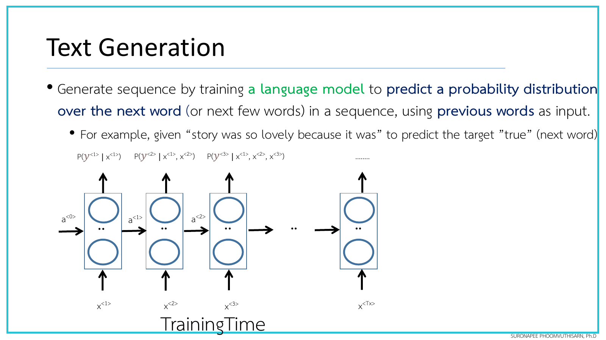
"story was so lovely because it was true" 8 คำ: x = คำที่ 1–7 · y = คำที่ 2–8 · โจทย์ที่ step 7 คือ P(true | story … was) · ได้ 7 โจทย์ต่อประโยค · โค้ด: x = vectorized_sequences[:, :-1] · y = vectorized_sequences[:, 1:]
เทรนเสร็จก็ สุ่ม ลำดับใหม่: ป้อนข้อความตั้งต้น ได้การกระจายของคำถัดไป สุ่มคำหนึ่ง เติมกลับเข้า input แล้วทำซ้ำจนได้ <EOS> คือ RNN แบบ vector-to-sequence ของ Lesson 10
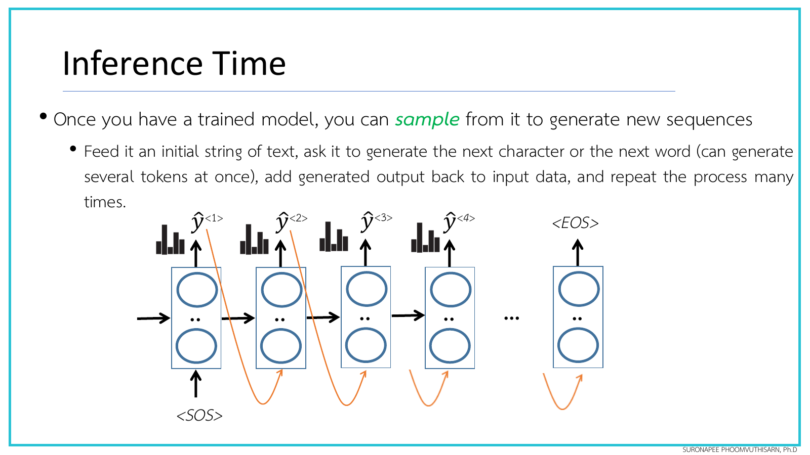
temperature เหมือนปุ่มความกล้าของคนเล่าเรื่อง ปรับต่ำก็พูดแต่คำที่ปลอดภัยซ้ำไปมา ปรับสูงก็พูดคำแปลกๆ จนฟังไม่รู้เรื่อง
ได้ความน่าจะเป็นของคำถัดไปแล้ว ต้องเลือกว่าจะหยิบคำไหน วิธีแรกคือ greedy sampling เลือกคำที่น่าจะเป็นสุดเสมอ ผลคือข้อความซ้ำ เดาได้ ไม่เหมือนภาษาจริง วิธีที่สองคือ stochastic sampling เพิ่มความสุ่มโดยสุ่มตามการกระจายความน่าจะเป็น เช่นหลัง "The" ได้ nice 50% dog 40% car 10% ก็สุ่มตามสัดส่วนนั้น แต่วิธีนี้คุมระดับความสุ่มไม่ได้ softmax temperature จึงเข้ามาเป็นปุ่มปรับ
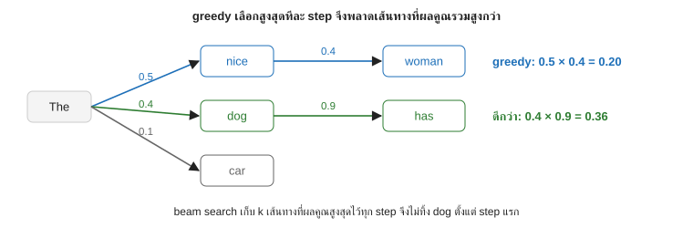
ในรูปต้นไม้ greedy เลือก nice เพราะ 0.5 สูงสุดที่ step แรก แล้วได้ "The nice woman" ผลคูณ 0.20 แต่ "The dog has" ได้ 0.36 ซึ่ง greedy ไม่เคยเห็น เพราะทิ้ง dog ไปตั้งแต่ step แรก ปัญหาเดียวกันนี้เป็นเหตุผลของ beam search ในตอน 3.2
ยกกำลัง 1/T แล้ว normalize · T < 1 ตัวสูงยิ่งสูง · T > 1 ทุกตัวเข้าใกล้กัน
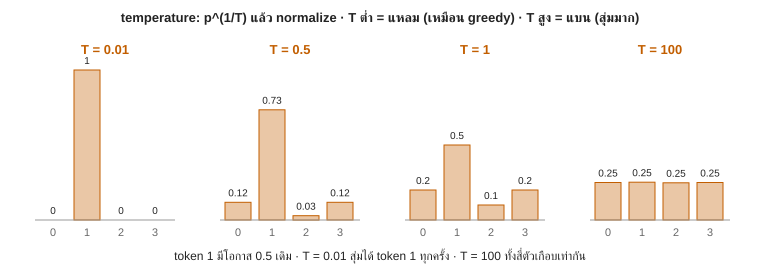
การกระจายเดิม [0.2, 0.5, 0.1, 0.2] ที่ T = 1 ไล่ไปซ้ายแท่งยิ่งแหลมจน T = 0.01 เหลือแท่งเดียวเท่า greedy ไล่ไปขวาแท่งยิ่งแบนจน T = 100 เกือบเท่ากันหมด
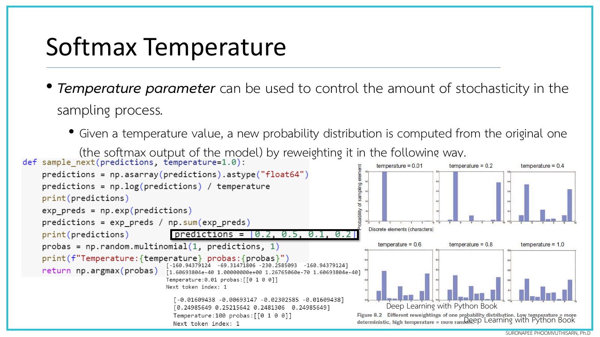
ผลจากโค้ดตรงกับที่คำนวณ: T = 0.01 ได้ probas [[0 1 0 0]] ทุกครั้ง T = 100 ได้การกระจายเกือบเท่ากัน T ต่ำ = more deterministic T สูง = more random
def sample_next(predictions, temperature=1.0):
predictions = np.asarray(predictions).astype("float64")
predictions = np.log(predictions) / temperature
print(predictions)
exp_preds = np.exp(predictions)
predictions = exp_preds / np.sum(exp_preds)
print(predictions)
probas = np.random.multinomial(1, predictions, 1)
print(f"Temperature:{temperature} probas:{probas}")
return np.argmax(probas)np.log(predictions) / temperature | log แล้วหาร T เท่ากับยกกำลัง 1/T |
exp_preds / np.sum(exp_preds) | exp กลับแล้ว normalize ให้รวมเป็น 1 |
np.random.multinomial(1, predictions, 1) | สุ่ม 1 ครั้งตามการกระจายใหม่ ได้ one-hot เช่น [[0 1 0 0]] |
np.argmax(probas) | index ของ token ที่สุ่มได้ |
T = 0.5 ยกกำลัง 2: [0.04, 0.25, 0.01, 0.04] รวม 0.34 ได้ [0.118, 0.735, 0.029, 0.118] · T = 100: log หาร 100 ได้ [−0.0161, −0.0069, −0.0230, −0.0161] แล้วได้ [0.2499, 0.2522, 0.2481, 0.2499]
T ต่ำทำให้ deterministic ไม่ใช่ random · temperature ไม่เปลี่ยนลำดับ ตัวที่น่าจะเป็นสุดยังน่าจะเป็นสุด
ยกกำลัง 2 ได้ [0.36, 0.09, 0.01] รวม 0.46 · ได้ [0.783, 0.196, 0.022]
ตัวอย่างจริงเทรน language model บนรีวิว IMDB X และ y แต่ละ batch shape (256, 99) แถวแรกของ y คือแถวแรกของ X เลื่อน 1 ตำแหน่ง: X เริ่ม 314, 9, 4408 · y เริ่ม 9, 4408, 4 ข้อความยาว 100 token จึงเหลือ 99 ต่อคู่
for X, y in lm_dataset.take(1):
print("X", X)
print("y", y)
print(X.shape, y.shape)
inputs = Input(shape=(None,), dtype="int64")
# Instantiating an Embedding layer
embedded = Embedding(input_dim=vocab_size, output_dim=256, mask_zero=True)(inputs)
# Add a GRU.
x = GRU(1024, return_sequences=True)(embedded)
# Softmax over possible vocabulary words, computed for each output sequence timestep.
outputs = Dense(vocab_size, activation="softmax")(x)
model = Model(inputs, outputs)Embedding(input_dim=vocab_size, output_dim=256, mask_zero=True) | vocab 20,000 เป็น vector 256 มิติ mask padding |
GRU(1024, return_sequences=True) | ต้องคืนทุก step เพราะทุก step มี target |
Dense(vocab_size, activation="softmax") | ความน่าจะเป็นของคำถัดไปทั้ง 20,000 คำต่อ step · loss sparse_categorical_crossentropy |
notebook ที่รันจริงใช้ GRU(128) ไม่ใช่ 1024 ตามสไลด์: Embedding 5,120,000 · GRU 3 × [128 × 384 + 2 × 128] = 148,224 · Dense 128 × 20,000 + 20,000 = 2,580,000 · total 7,848,224
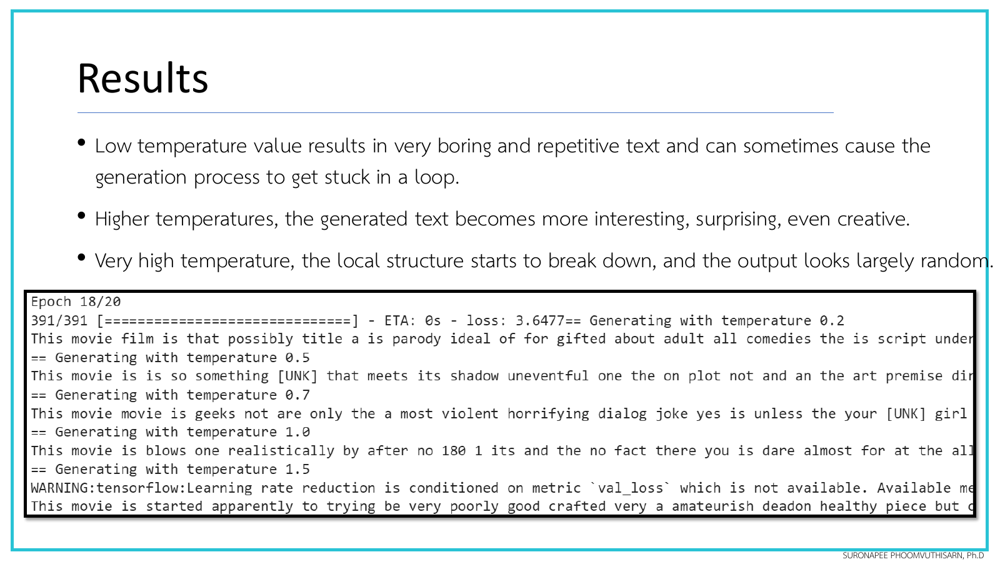
ผลที่ได้ตามแต่ละ temperature: T ต่ำ 0.2 ได้ข้อความน่าเบื่อซ้ำและอาจติดวน · T กลาง 0.5–1.0 น่าสนใจ บางทีสร้างสรรค์ · T สูง 1.5 โครงสร้างระดับประโยคเริ่มพัง ข้อความเกือบสุ่ม [UNK] ในข้อความคือคำนอก 20,000 คำที่โมเดลเรียนจะสร้างด้วย
Machine translation คือ แปล ประโยคจากภาษาหนึ่งไปอีกภาษา ด้วย encoder และ decoder encoder สร้าง vector แทนประโยคต้นทาง แล้วใช้เป็น initial state ของ decoder มองอีกแบบได้ว่าเป็น conditional language model: decoder คือ language model ที่มีประโยคต้นทางเป็นเงื่อนไข
คำปลายทางถัดไป ขึ้นกับประโยคต้นทางทั้งประโยค และคำปลายทางที่สร้างไปแล้ว
ตอนเทรน encoder แปลงต้นทางเป็น representation ระหว่างทาง แล้ว decoder ทาย token ที่ i จาก token ก่อนหน้า 0 ถึง i − 1 และ ต้นทางที่เข้ารหัสแล้ว สิ่งที่ต้องจำคือประโยค target เลื่อนถอย 1 step จาก input
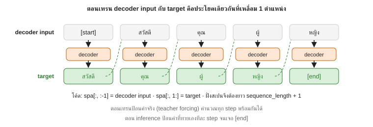
แถวบนคือ decoder input เริ่มด้วย [start] แถวล่างคือ target จบด้วย [end] เส้นประบอกว่า target ของ step หนึ่งคือ input ของ step ถัดไป ตอนเทรนป้อนคำจริงเรียก teacher forcing
teacher forcing เหมือนครูคอยบอกคำที่ถูกทุกคำตอนฝึกอ่าน พอสอบจริงต้องอ่านต่อจากคำที่ตัวเองพูดไปแล้ว ถ้าพูดผิดตั้งแต่คำแรก คำต่อๆ ไปก็ผิดตาม
หลังเทรนไม่มีประโยคปลายทางให้ป้อน จึงป้อน decoder ด้วยoutput ของ decoder ที่ step ก่อนหน้า ในรูป แถวผลทาย (ตัวอย่างเท่านั้น)เป็น ????? ทุกช่อง เพราะยังไม่รู้ว่าโมเดลจะทายอะไร ถ้าทายผิดที่ step แรก คำที่ผิดจะถูกป้อนต่อไปทุก step
| training | inference | |
|---|---|---|
| decoder input ที่ step t | คำจริง | คำที่ทายเอง |
| คำนวณ | ทุก step พร้อมกัน | ทีละ step |
| หยุดเมื่อ | ครบความยาว target | ได้ <EOS> หรือครบความยาวสูงสุด |
เติม [start] [end] เฉพาะฝั่งปลายทาง · teacher forcing ใช้ตอนเทรนเท่านั้น
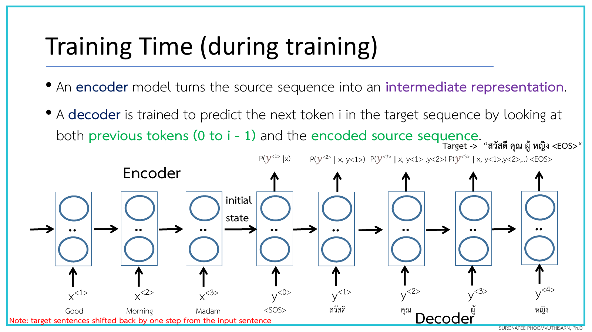
ตัวอย่างนี้มีไว้ให้เห็นว่า การเหลื่อม 1 ตำแหน่งอยู่ในโค้ดตรงไหน และ parameter ส่วนใหญ่อยู่ที่ output layer
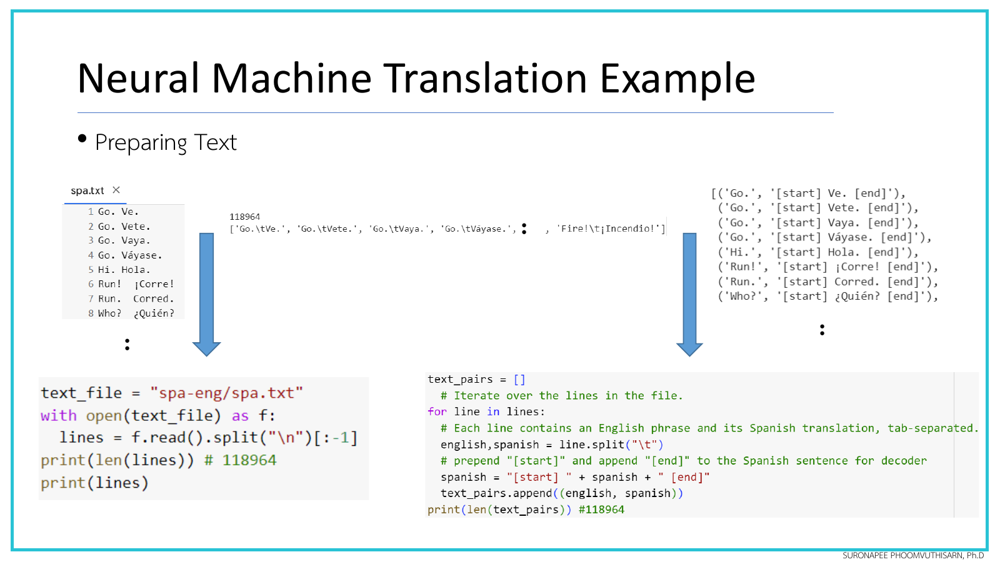
ไฟล์ spa.txt มีคู่ประโยคคั่นด้วย tab เช่น Go.\tVe. ได้ 118,964 คู่ ฝั่งสเปนเติม "[start] " หน้าและ " [end]" ท้าย
text_file = "spa-eng/spa.txt"
with open(text_file) as f:
lines = f.read().split("\n")[:-1]
print(len(lines)) # 118964
print(lines)
text_pairs = []
# Iterate over the lines in the file.
for line in lines:
# Each line contains an English phrase and its Spanish translation, tab-separated.
english,spanish = line.split("\t")
# prepend "[start]" and append "[end]" to the Spanish sentence for decoder
spanish = "[start] " + spanish + " [end]"
text_pairs.append((english, spanish))
print(len(text_pairs)) #118964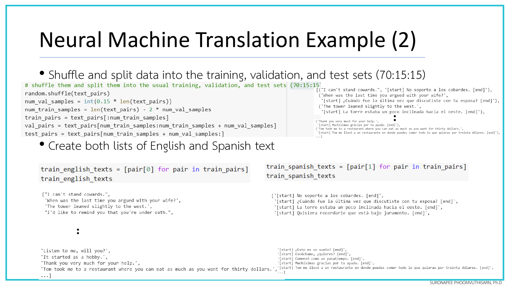
val และ test ได้ ⌊0.15 × 118,964⌋ = 17,844 ชุดละ train ได้ 118,964 − 2 × 17,844 = 83,276 ต้อง shuffle ก่อนตัด เพราะไฟล์เรียงจากประโยคสั้นไปยาว
# shuffle them and split them into the usual training, validation, and test sets (70:15:15)
random.shuffle(text_pairs)
num_val_samples = int(0.15 * len(text_pairs))
num_train_samples = len(text_pairs) - 2 * num_val_samples
train_pairs = text_pairs[:num_train_samples]
val_pairs = text_pairs[num_train_samples:num_train_samples + num_val_samples]
test_pairs = text_pairs[num_train_samples + num_val_samples:]
train_english_texts = [pair[0] for pair in train_pairs]
train_spanish_texts = [pair[1] for pair in train_pairs]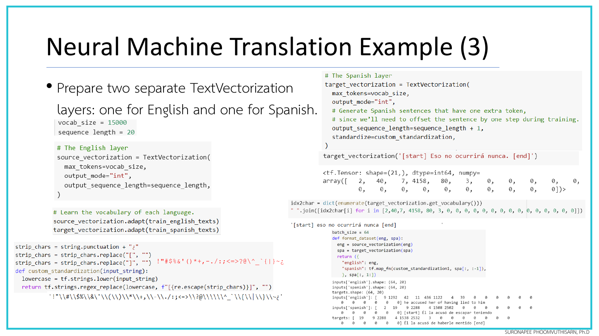
ฝั่งสเปนตั้งความยาว 21 เพราะต้องตัดเป็นสองแบบ คือ decoder input ตัดตัวสุดท้ายออก และ target ตัดตัวแรกออก จึงเหลือยาว 20 ทั้งคู่ ตัวอย่างที่พิมพ์: '[start] Eso no ocurrirá nunca. [end]' ได้ [2, 40, 7, 4158, 80, 3, 0, …] index 2 = [start] 3 = [end] 0 = padding 1 = [UNK] เครื่องหมายที่ลบคือ วรรคตอนทั้งหมดรวม ¿ โดยเอา [ ] ออกจากรายการ เพื่อเก็บ [start] [end]
vocab_size = 15000
sequence_length = 20
# The English layer
source_vectorization = TextVectorization(
max_tokens=vocab_size,
output_mode="int",
output_sequence_length=sequence_length,
)
# The Spanish layer
target_vectorization = TextVectorization(
max_tokens=vocab_size,
output_mode="int",
# Generate Spanish sentences that have one extra token,
# since we'll need to offset the sentence by one step during training.
output_sequence_length=sequence_length + 1,
standardize=custom_standardization,
)
# Learn the vocabulary of each language.
source_vectorization.adapt(train_english_texts)
target_vectorization.adapt(train_spanish_texts)
strip_chars = string.punctuation + "¿"
strip_chars = strip_chars.replace("[", "")
strip_chars = strip_chars.replace("]", "")
def custom_standardization(input_string):
lowercase = tf.strings.lower(input_string)
return tf.strings.regex_replace(lowercase, f"[{re.escape(strip_chars)}]", "")
batch_size = 64
def format_dataset(eng, spa):
eng = source_vectorization(eng)
spa = target_vectorization(spa)
return ({
"english": eng,
"spanish": spa[:, :-1],
}, spa[:, 1:])output_sequence_length=sequence_length + 1 | ฝั่งสเปนยาว 21 ตัดเหลือ 20 ทั้ง input และ target |
strip_chars.replace("[", "") | ไม่ลบ [ ] เพื่อเก็บ token [start] [end] |
"spanish": spa[:, :-1] · spa[:, 1:] | decoder input กับ target เหลื่อม 1 ตำแหน่ง · ทุกตัว shape (64, 20) |
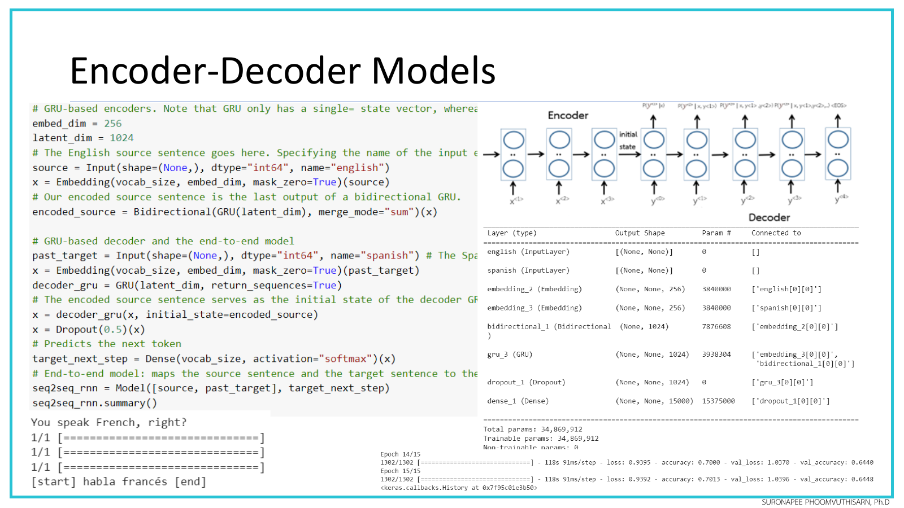
encoder คือ Bi-GRU ที่บวก state สองทิศ ได้ 1,024 ค่าเท่า state ของ decoder ผลแปลตัวอย่าง "You speak French, right?" ได้ [start] habla francés [end] val_accuracy ราว 0.645 ที่ epoch 15
# GRU-based encoders. Note that GRU only has a single= state vector, whereas LSTM has multiple
embed_dim = 256
latent_dim = 1024
# The English source sentence goes here. Specifying the name of the input enables us to fit() the model with a dict of inputs.
source = Input(shape=(None,), dtype="int64", name="english")
x = Embedding(vocab_size, embed_dim, mask_zero=True)(source)
# Our encoded source sentence is the last output of a bidirectional GRU.
encoded_source = Bidirectional(GRU(latent_dim), merge_mode="sum")(x)
# GRU-based decoder and the end-to-end model
past_target = Input(shape=(None,), dtype="int64", name="spanish") # The Spanish target sentence goes here
x = Embedding(vocab_size, embed_dim, mask_zero=True)(past_target)
decoder_gru = GRU(latent_dim, return_sequences=True)
# The encoded source sentence serves as the initial state of the decoder GRU.
x = decoder_gru(x, initial_state=encoded_source)
x = Dropout(0.5)(x)
# Predicts the next token
target_next_step = Dense(vocab_size, activation="softmax")(x)
# End-to-end model: maps the source sentence and the target sentence to the target sentence one step in the future
seq2seq_rnn = Model([source, past_target], target_next_step)
seq2seq_rnn.summary()Input(..., name="english") · name="spanish" | ชื่อตรงกับ key ของ dict ใน format_dataset |
Bidirectional(GRU(latent_dim), merge_mode="sum") | บวก state สองทิศ ไม่ต่อ จึงได้ 1,024 |
decoder_gru(x, initial_state=encoded_source) | จุดเชื่อม encoder กับ decoder |
Model([source, past_target], target_next_step) | สอง input หนึ่ง output |
Embedding สองตัว 2 × 15,000 × 256 = 7,680,000 · GRU(1024) รับ 256: 3 × [1,024 × 1,280 + 2,048] = 3,938,304 · encoder สองทิศ 7,876,608 · decoder 3,938,304 · Dense 1,024 × 15,000 + 15,000 = 15,375,000 คือ 44% · total 34,869,912
merge_mode="sum" บวก ไม่ต่อ ถ้าต่อจะได้ 2,048 ซึ่งไม่เท่า state ของ decoder
vocabulary ใหญ่ทำให้ softmax บน vector 15,000 คำทุก step คำนวณแพง ทางแก้คือดู logit ของคำที่ถูกกับคำผิดที่สุ่มมาจำนวนหนึ่ง แล้วประมาณ loss เรียก sampled softmax ตอน inference ต้องใช้ softmax ปกติ เพราะไม่รู้ target เริ่มด้วย <SOS> แล้วป้อนต่อจนได้ <EOS> token 0 จาก padding ต้องไม่นับใน loss
sampled softmax ใช้คำผิด 500 คำ: คำนวณ 501 logit แทน 15,000 ลดราว 30 เท่าต่อ step
BLEU score เทียบประโยคที่ทายกับประโยคเป้าหมาย ได้ค่า 0 ถึง 1 วิธีคือนับว่าคำเดี่ยวและกลุ่มคำที่ติดกัน (n-gram) ของคำแปลตรงกับเป้าหมายกี่ส่วน แล้วลงโทษคำแปลที่สั้นเกินไป เพราะคำแปลที่สั้นมากทำ precision สูงได้ง่าย ในสไลด์สะกดว่า "Blue score" ชื่อจริงคือ BLEU ย่อจาก Bilingual Evaluation Understudy
c คือจำนวนคำที่ทาย r คือจำนวนคำของเป้าหมาย BP ลงโทษคำแปลที่สั้นเกิน
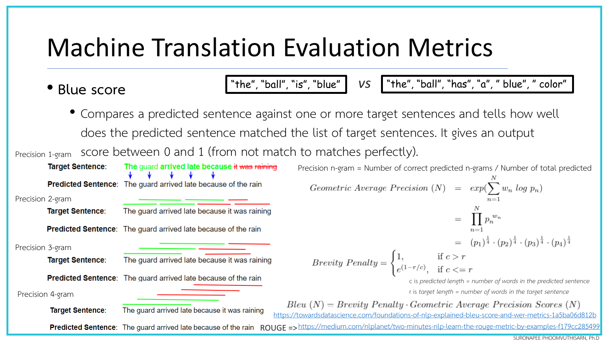
ตัวอย่างง่าย: "the ball is blue" เทียบ "the ball has a blue color" ได้ 1-gram precision 3/4 คือ the, ball, blue อีก metric คือ ROUGE นิยมใช้กับ summarization
predicted 8 คำ: p₁ = 5/8 = 0.625 · p₂ = 4/7 = 0.571 · p₃ = 3/6 = 0.5 · p₄ = 2/5 = 0.4 · geometric mean (0.0714)^(1/4) = 0.517 · c = r = 8 จึง BP = e⁰ = 1 · BLEU ≈ 0.52
precision ลดลงเมื่อ n โต เพราะต้องตรงต่อเนื่องหลายคำ · BP = 1 เมื่อคำแปลยาวกว่าเป้าหมาย ไม่ใช่สั้นกว่า
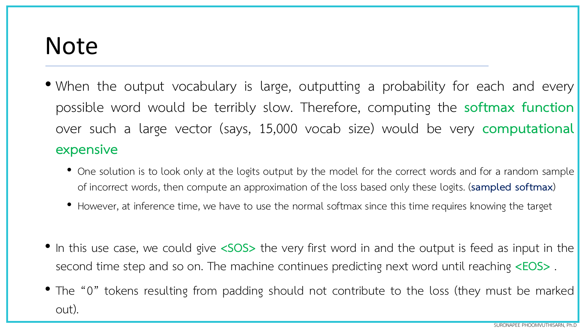
encoder–decoder แบบ RNN มีปัญหาสองข้อ ข้อแรก: โมเดล ย้อนกลับไปแก้ไม่ได้ สร้างคำที่น่าจะเป็นสุดทุก step แล้วพยายามเติมประโยคให้ดีที่สุด ได้ คำแปลที่ไม่ดีที่สุด เลือก am ที่ step 2 ก็ถูกบังคับเป็น "I am going to school now" ทั้งที่บริบทเป็นอนาคตควรเป็น will ทางแก้หนึ่งคือ beam search
Beam search เก็บ รายชื่อสั้นของ k ประโยคที่น่าจะเป็นที่สุด ทุก step ขยายแต่ละประโยคด้วยคำอีก 1 คำ แล้วเก็บ k ตัวที่ดีสุด k เรียก beam width ความน่าจะเป็นของประโยคคือผลคูณตาม chain rule
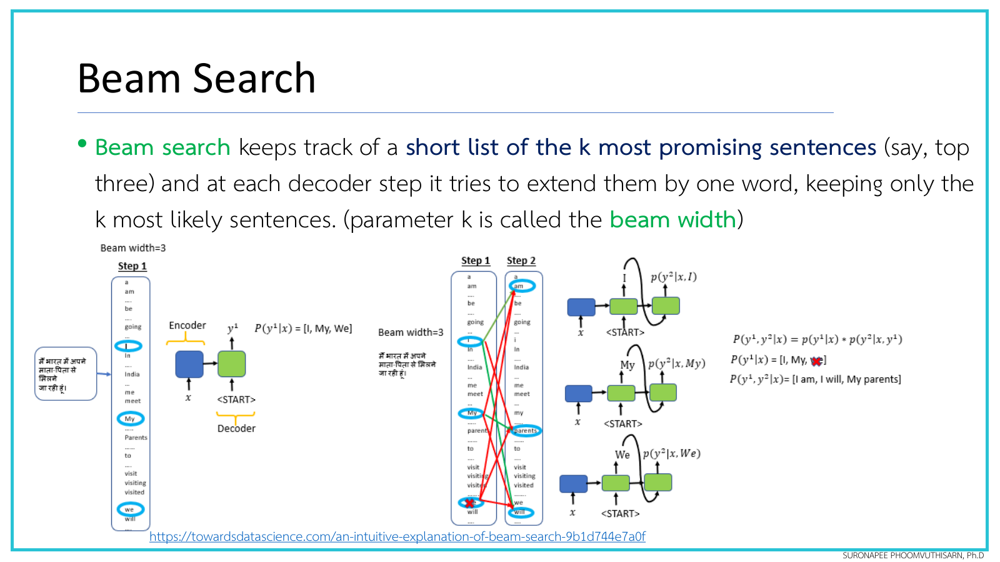
ในรูป step 1 เก็บ I, My, We · step 2 ขยายทั้งหมดแล้วเหลือ I am, I will, My parents ประโยคที่ขึ้นต้นด้วย We หลุดเพราะผลคูณต่ำกว่าสามอันดับแรก
vocab 10,000 k = 3: candidate ต่อ step 3 × 10,000 = 30,000 เก็บไว้ 3 · greedy k = 1 ดู 10,000 · k = 10 ดู 100,000 · ผลสุดท้ายในตัวอย่าง: 0.56 "I am going to meet my parents in India" · 0.49 · 0.39 · เลือก 0.56
สรุปเรื่อง beam search: beam width สูงแปลดีขึ้น แต่ใช้ memory และการคำนวณมาก ทำงานดี กับประโยคค่อนข้างสั้น แต่ยังแปล ประโยคยาว ไม่ดี
ล่ามที่ต้องฟังสุนทรพจน์ทั้งชั่วโมงก่อน แล้วค่อยแปลจากความจำ ยิ่งยาวยิ่งลืมตอนต้น
ปัญหาข้อที่สอง: แปลประโยคยาว ไม่ดี เพราะ encoder บีบทุกอย่าง ลง vector ขนาดตายตัว RNN ค่อยๆ ลืมอดีตใน ลำดับยาว Attention ให้ decoder โฟกัสคำที่เหมาะสม ในแต่ละ step ในโมเดลตอน 2.2 ประโยค 5 คำหรือ 20 คำก็ถูกบีบเป็น 1,024 ค่าเท่ากัน
beam search แก้ปัญหาเลือกพลาดแต่ต้น ไม่ได้แก้ประโยคยาว · ประโยคยาวแก้ด้วย attention
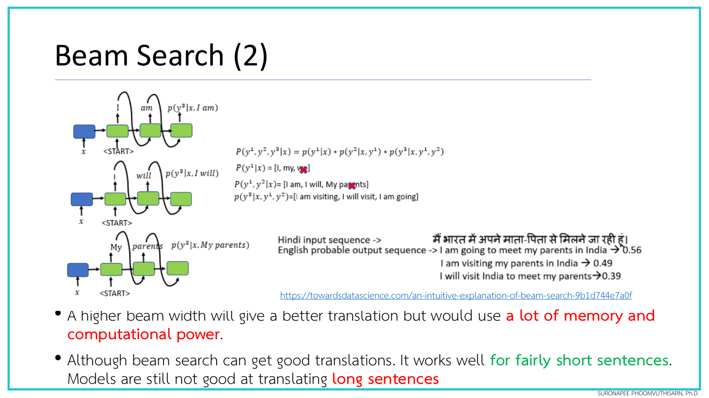
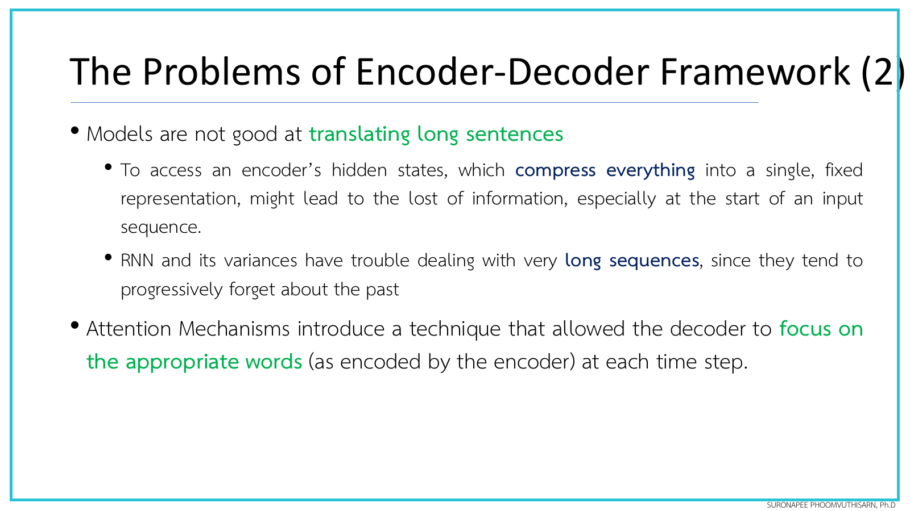
ล่ามที่แปลทีละคำ ไม่ต้องจำทั้งย่อหน้าไว้ในหัว แค่ก้มดูต้นฉบับทุกครั้งที่จะพูดคำถัดไป แล้วมองเฉพาะคำที่เกี่ยวข้อง
Attention ของ Bahdanau ปี 2014 ให้ decoder โฟกัสคำที่เหมาะสม ทุก step: encoder ส่ง output ทั้งหมดของ encoder ไม่ใช่แค่ state สุดท้าย · ทุก step decoder คำนวณผลรวมถ่วงน้ำหนักของ output เหล่านั้น · decoder ยังได้ hidden state และ คำเป้าหมาย จาก step ก่อน
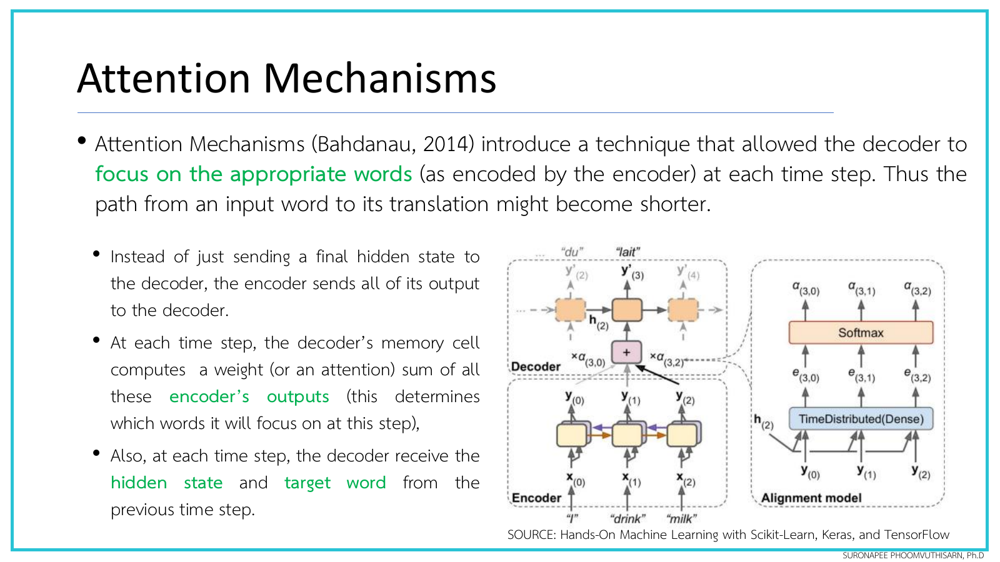
ในแผนภาพ alignment model รับ state ของ decoder กับ encoder output แต่ละตัว ได้คะแนน e แล้วผ่าน softmax เป็น α ใช้ถ่วงก่อนทายคำที่ 3 คือ lait
น้ำหนัก มาจาก network เล็กชื่อ alignment model ที่ เทรนร่วมกัน กับ encoder–decoder ให้คะแนนว่า encoder output แต่ละตัวเข้ากับ state ปัจจุบันของ decoder แค่ไหน แล้วผ่าน softmax น้ำหนักของ step หนึ่งรวมเป็น 1 ตัวอย่างในรูป state ของ decoder [23, 55, 33, …] ใกล้ vector ของ milk [23, 54, 31, …] attention จึงให้น้ำหนัก milk สูง
คะแนน [0, 0, 2] ผ่าน softmax ได้ [0.107, 0.107, 0.787] · encoder outputs [1, 0], [0, 1], [1, 1] · context = 0.107[1, 0] + 0.107[0, 1] + 0.787[1, 1] = [0.894, 0.894] ใกล้ตัวที่สามที่สุด
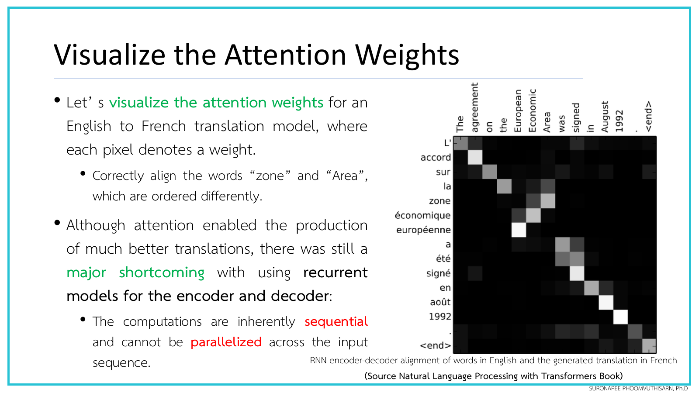
เมื่อดู attention weight เป็นภาพ heatmap ส่วนใหญ่อยู่บนเส้นทแยง แต่ช่วงกลางกลับทิศ เพราะ European Economic Area กับ zone économique européenne เรียงคำกลับกัน attention ก็ยัง align zone กับ Area ได้ถูก แม้ attention ช่วยมาก แต่ยังมีข้อเสียใหญ่ เพราะยังใช้ RNN การคำนวณจึงเป็นลำดับ ต้องรอ step ก่อนหน้าเสร็จ จึงทำขนานไม่ได้ ข้อนี้นำไปสู่ Transformer
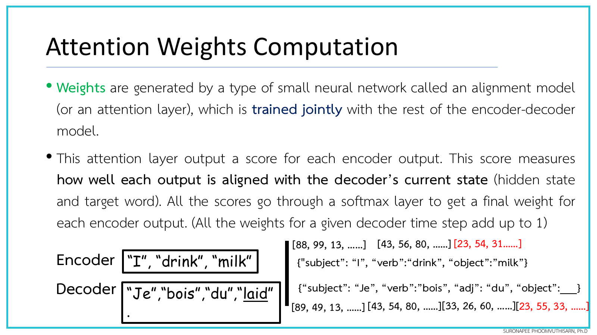
Vaswani และคณะเผยแพร่ "Attention Is All You Need" ปี 2017 ดีกว่า RNN ทั้งคุณภาพแปลและต้นทุนการเทรน ต่อด้วย GPT, BERT ปี 2018 · GPT-2, RoBERTa, DistilBERT ปี 2019 · GPT-3, T5 ปี 2020
Transformer encoder แปลงลำดับ token เป็น embedding ที่ รู้บริบท · Transformer decoder ใช้ hidden state ของ encoder สร้าง output ทีละ token ตัวอย่าง "Time flies like an arrow" กับ decoder ที่อ่าน "Die Zeit fliegt wie ein" แล้วทาย Pfeil เหมือน encoder–decoder RNN ทุกส่วน ต่างแค่ RNN ถูกแทนด้วย self-attention layer
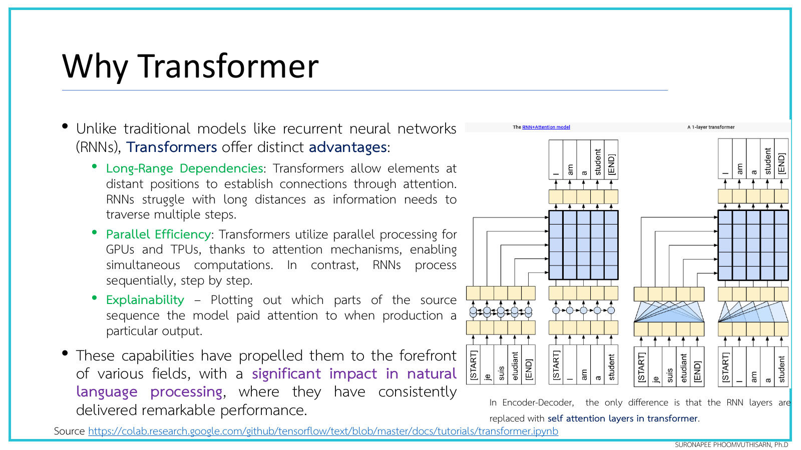
| ข้อดีของ Transformer | ความหมาย | ประโยค n token |
|---|---|---|
| ความสัมพันธ์ระยะไกล | ตำแหน่งไกลกันเชื่อมตรงผ่าน attention | คำแรกถึงคำสุดท้าย RNN n − 1 step · Transformer 1 step |
| ทำขนานได้ | ใช้ GPU/TPU ทุกตำแหน่งพร้อมกัน | RNN n step ต่อกัน · Transformer ใน layer เดียว |
| อธิบายได้ | plot ได้ว่าโมเดลมองตรงไหน | attention เป็น matrix n × n วาดเป็น heatmap |
Transformer มีข้อดีสามข้อเหนือ RNN คือเชื่อมคำที่อยู่ไกลกันได้ตรงๆ ผ่าน attention ไม่ต้องส่งต่อทีละ step · คำนวณทุกตำแหน่งขนานกันได้บน GPU · ดู attention weight ได้ว่าโมเดลสนใจอะไร ข้อดีเหล่านี้ทำให้ Transformer มี ผลกระทบใหญ่ต่อ NLP ใน encoder–decoder ความต่างเดียวคือ RNN ถูกแทนด้วย self-attention layer ใน Transformer ชิ้นส่วนมีสามกลุ่ม: embedding + positional encoding · encoder = self-attention + feed forward · decoder = causal self-attention + cross attention + feed forward รูป 4-layer Transformer ซ้อนอย่างละ 4 ชั้น output ของ encoder ชั้นสุดท้ายเข้า cross attention ของ decoder ทุกชั้น
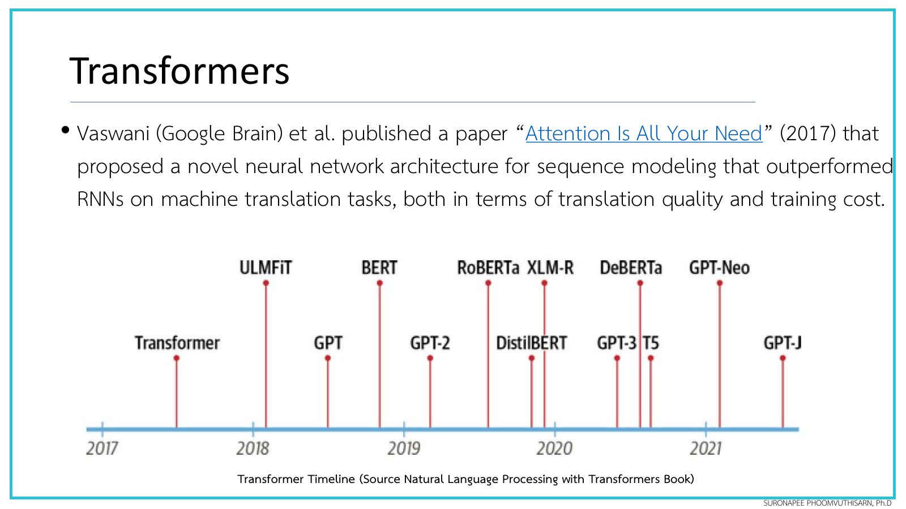
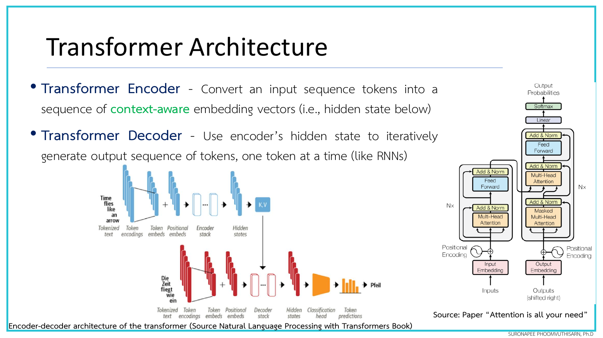
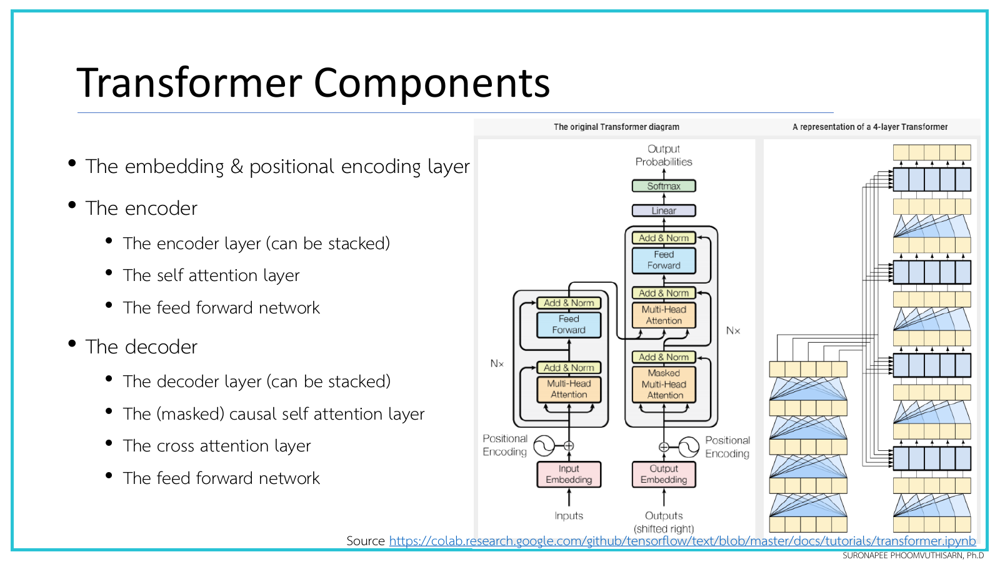
self-attention เหมือนเทลูกปัดทั้งหมดลงถุงแล้วดูว่าลูกไหนเข้ากับลูกไหน ลำดับหายไป จึงต้องเขียนเลขที่นั่งติดไว้บนลูกปัดแต่ละลูกก่อน
embedding ของ Transformer มีสองส่วนที่ บวก กัน: input embedding แทนคำโดยไม่สนบริบท และ position embedding แทนตำแหน่ง ค่าตำแหน่งดิบ 0, 1, …, 500 ใหญ่เกินจะกลบความหมายของคำ จึงใช้ค่าที่วนในช่วง [−1, 1] จาก ฟังก์ชัน sine และ cosine ไม่มี parameter ให้เรียน
มิติคู่ใช้ sin มิติคี่ใช้ cos คู่มิติ 2i กับ 2i+1 ใช้ความถี่เดียวกัน มิติยิ่งสูงความถี่ยิ่งต่ำ
| \(pos\) | ตำแหน่งในลำดับ |
| \(i\) | ดัชนีของคู่มิติ |
| \(d_{model}\) | มิติของ embedding เช่น 512 หรือ 768 |
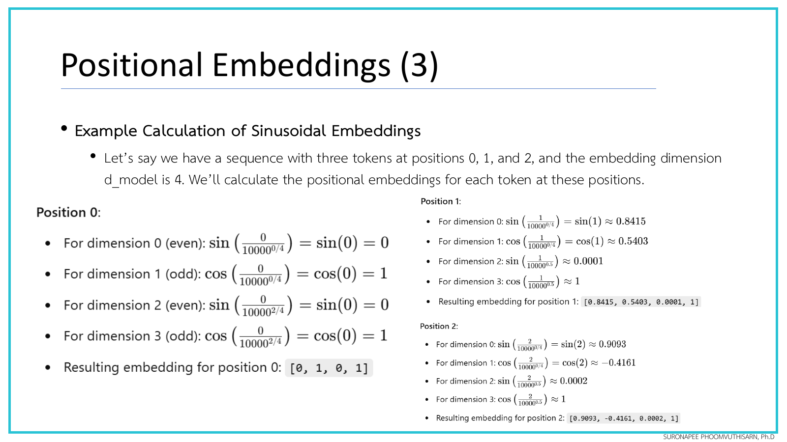
d_model = 4 มิติ 0–1 หารด้วย 1 มิติ 2–3 หารด้วย 10000^0.5 = 100 · ตำแหน่ง 0: [0, 1, 0, 1] · ตำแหน่ง 1: [sin 1, cos 1, sin 0.01, cos 0.01] = [0.8415, 0.5403, 0.0100, 0.99995] · ตำแหน่ง 2: [0.9093, −0.4161, 0.0200, 0.9998]
ในสไลด์ ตัวอย่างคำนวณเขียนตัวหาร 10000^0.5 ถูก แต่พิมพ์ผลมิติ 2 เป็น 0.0001 และ 0.0002 ค่าที่ถูกคือ 0.0100 และ 0.0200 ถ้าข้อสอบใช้ตัวเลขจากสไลด์ ให้รู้ด้วยว่าสไลด์พิมพ์ [0.8415, 0.5403, 0.0001, 1]
บวกกับ token embedding [0.5, 0.3, −0.6, 0.8] ตามค่าบนสไลด์ได้ [1.3415, 0.8403, −0.5999, 1.8] · ใช้ค่าที่ถูกได้ [1.3415, 0.8403, −0.5900, 1.79995] · ระยะระหว่างตำแหน่ง 0–1 และ 1–2 ≈ 0.96 เท่ากัน · 0–2 ≈ 1.68
ระยะของคู่ที่ติดกันเท่ากันทุกคู่ ระยะจึงขึ้นกับระยะห่างสัมพัทธ์ ไม่ใช่ตำแหน่งสัมบูรณ์ sinusoidal encoding จึงมีข้อดีสามข้อ: position invariance คือเรียนตำแหน่งสัมพัทธ์ง่าย · fixed pattern ไม่ต้องเทรน ลดเสี่ยง overfitting · flexibility in length ใช้กับลำดับยาวกว่าตอนเทรนได้
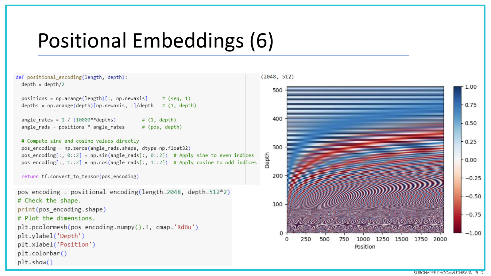
ภาพ pcolormesh ของ positional encoding: มิติล่างความถี่สูงสลับสีถี่ มิติบนความถี่ต่ำแทบเป็นแถบสีเดียว ทุกคอลัมน์คือหนึ่งตำแหน่งที่มีรูปแบบสีไม่ซ้ำ shape ที่พิมพ์คือ (2048, 512)
def positional_encoding(length, depth):
depth = depth/2
positions = np.arange(length)[:, np.newaxis] # (seq, 1)
depths = np.arange(depth)[np.newaxis, :]/depth # (1, depth)
angle_rates = 1 / (10000**depths) # (1, depth)
angle_rads = positions * angle_rates # (pos, depth)
# Compute sine and cosine values directly
pos_encoding = np.zeros(angle_rads.shape, dtype=np.float32)
pos_encoding[:, 0::2] = np.sin(angle_rads[:, 0::2]) # Apply sine to even indices
pos_encoding[:, 1::2] = np.cos(angle_rads[:, 1::2]) # Apply cosine to odd indices
return tf.convert_to_tensor(pos_encoding)
pos_encoding = positional_encoding(length=2048, depth=512*2)
# Check the shape.
print(pos_encoding.shape)
# Plot the dimensions.
plt.pcolormesh(pos_encoding.numpy().T, cmap='RdBu')
plt.ylabel('Depth')
plt.xlabel('Position')
plt.colorbar()
plt.show()depth = depth/2 | เรียกด้วย 512*2 = 1,024 หารสองได้ 512 มิติ |
angle_rates = 1 / (10000**depths) | ความถี่ของแต่ละมิติ มิติ 0 = 1 มิติท้ายเกือบ 1/10000 |
pos_encoding[:, 0::2] = np.sin(...) · [:, 1::2] = np.cos(...) | คอลัมน์คู่ sin คอลัมน์คี่ cos |
position embedding บวกกับ token embedding ไม่ใช่ต่อ มิติจึงเท่าเดิม · PositionalEmbedding ใน notebook เป็นแบบเรียนได้ Embedding(20, 256) มี 5,120 parameter และรับประโยคยาวเกิน 20 ไม่ได้
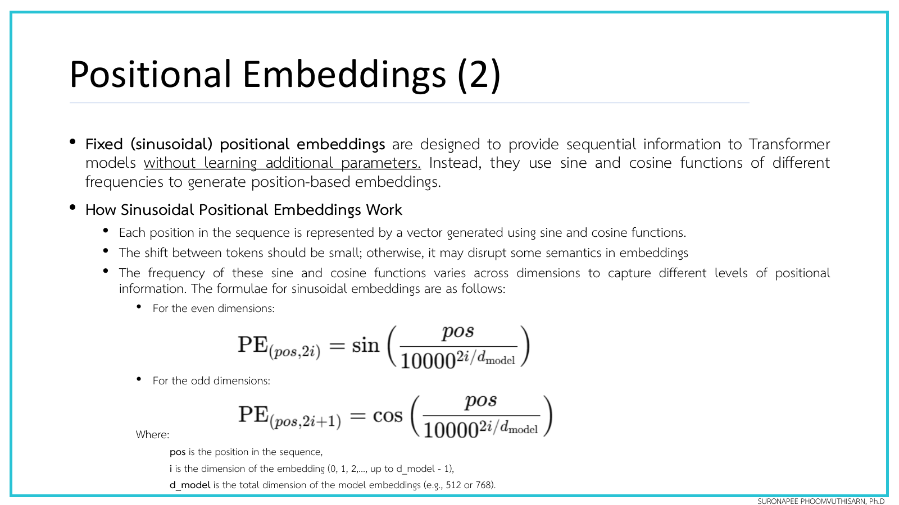
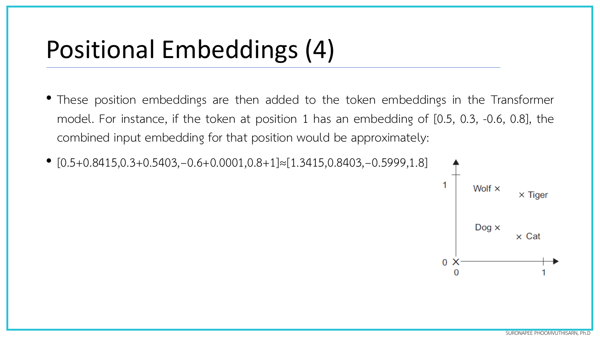
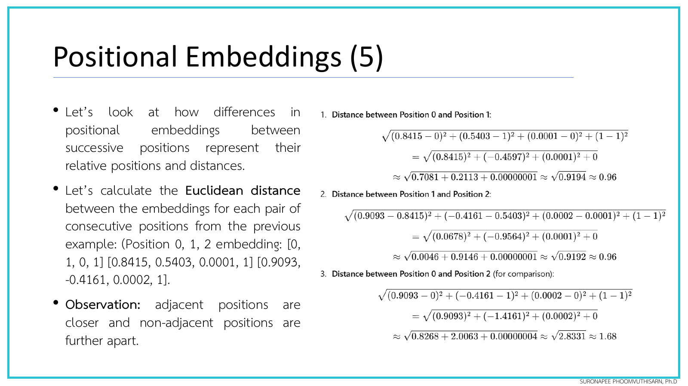
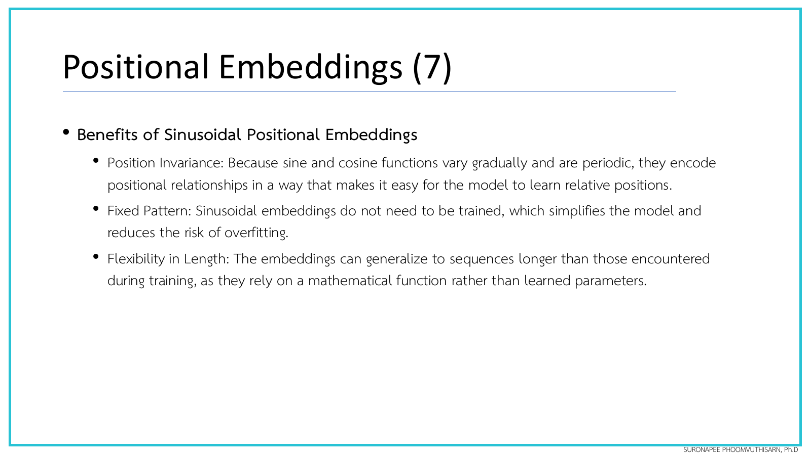
encoder แต่ละชั้นมีสองชั้นย่อย: multi-head self-attention และ feed-forward ที่ใช้กับแต่ละตำแหน่งแยกกัน หน้าที่คือ "update" embedding ของ encoder ให้มี ข้อมูลบริบท output ของแต่ละชั้น ขนาดเท่า input 5 token ที่ 512 มิติเข้า (5, 512) ออก (5, 512) จึงซ้อนกี่ชั้นก็ได้
คำว่า station ถามทุกคำในประโยคว่า "เกี่ยวกับฉันแค่ไหน" แล้วเอาความหมายของคำที่ตอบว่าเกี่ยวมากมาผสมเข้ากับตัวเอง
self-attention สร้าง representation ที่รู้บริบท ของ ทุก token คำว่า self หมายถึงคำนวณ weight ระหว่าง hidden state ทั้งหมดในชุดเดียวกัน ต่างจาก attention ของ RNN ที่เทียบ encoder output กับ state ของ decoder
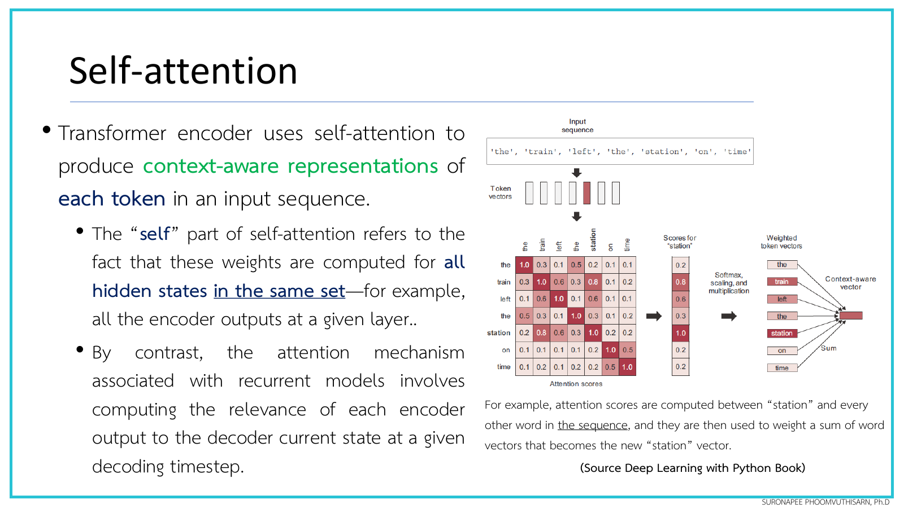
แถว station ของประโยค "the train left the station on time" ให้คะแนน train 0.8 สูงรองจากตัวเอง 1.0 vector ใหม่ของ station จึงหมายถึงสถานีรถไฟ ไม่ใช่สถานีวิทยุหรือสถานีตำรวจ
วิธีคำนวณ: หา คะแนน attention ด้วย dot product แล้วผ่าน การ scale และ softmax จากนั้นหา ผลรวมของ word vector ทุกคำในประโยค ถ่วงด้วยคะแนน
def self_attention(input_sequence):
output = np.zeros(shape=input_sequence.shape)
# Iterate over each token in the input sequence.
for i, pivot_vector in enumerate(input_sequence):
scores = np.zeros(shape=(len(input_sequence),))
for j, vector in enumerate(input_sequence):
# Compute the dot product (attention score)
# between the token and every other token
scores[j] = np.dot(pivot_vector, vector.T)
# Scale by a normalization factor, and apply a softmax.
scores /= np.sqrt(input_sequence.shape[1])
scores = softmax(scores)
new_pivot_representation = np.zeros(shape=pivot_vector.shape)
for j, vector in enumerate(input_sequence):
# Take the sum of all tokens weighted by the attention scores.
new_pivot_representation += vector * scores[j]
output[i] = new_pivot_representation # That sum is the output.
return output
# Keras built-in layer to handle it:
num_heads = 4
embed_dim = 256
mha_layer = MultiHeadAttention(num_heads=num_heads, key_dim=embed_dim)
outputs = mha_layer(inputs, inputs, inputs)scores[j] = np.dot(pivot_vector, vector.T) | คะแนนของ token j คือ dot product กับ pivot |
scores /= np.sqrt(input_sequence.shape[1]) | หาร √d กัน softmax อิ่มตัว |
new_pivot_representation += vector * scores[j] | ผลรวมถ่วงน้ำหนักของทุก token |
mha_layer(inputs, inputs, inputs) | query, value, key มาจากลำดับเดียวกัน คือ self-attention |
v₁ = [1, 0], v₂ = [0, 1], v₃ = [1, 1]: dot ของ v₁ ได้ [1, 0, 1] · หาร √2 ได้ [0.707, 0, 0.707] · softmax [0.401, 0.198, 0.401] · v₁ ใหม่ = [0.802, 0.599] ถูกดึงเข้าหา v₃ ที่คล้ายกัน
dot ได้ [4, 0] หาร √2 ได้ [2.83, 0] · softmax [0.944, 0.056] · v₁ ใหม่ = [1.89, 0.11]
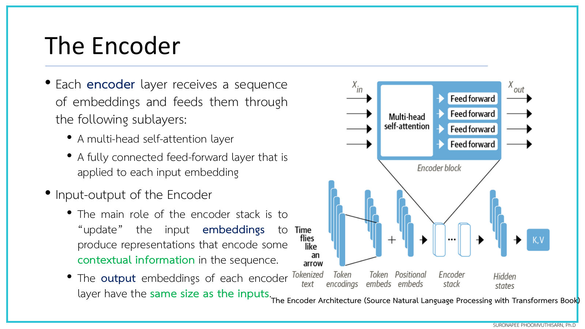
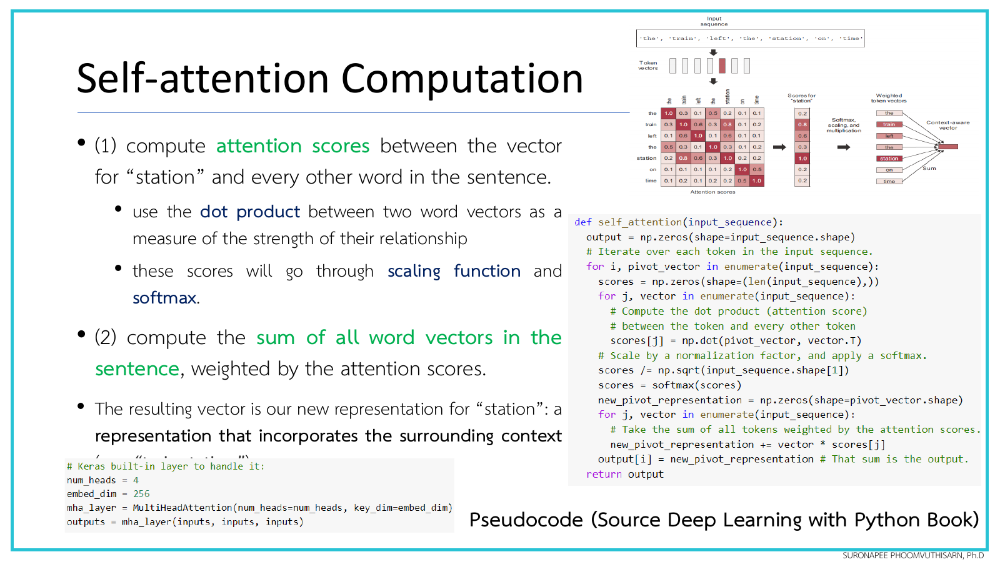
ค้นรูปในคลังด้วยคำว่า "dogs on the beach" คลังเทียบคำค้นกับป้ายของแต่ละรูป ป้ายไหนตรงมากก็ดึงรูปนั้นขึ้นมาเยอะ คำค้นคือ query ป้ายคือ key รูปคือ value
ในตอน 5.2 vector ของคำตัวเดียวทำสามหน้าที่ คือเป็นตัวถาม ตัวที่ถูกเทียบ และตัวที่ถูกนำไปผสม รูปทั่วไปแยกสามหน้าที่นี้ออกจากกันด้วย weight ที่เรียนได้ เขียนเป็น outputs = sum(values × pairwise_scores(query, keys)) ตัวอย่างคลังรูป: ป้าย {Beach, Tree, Boat} match 0.5 · {Beach, Dog, Tree} 1.0 · {Dog} 0.5
| ใน machine translation | query | keys, values |
|---|---|---|
| self-attention ใน encoder | ประโยคต้นทาง | ต้นทางเล่นทั้ง query, keys, values |
| cross-attention ใน decoder | ประโยคปลายทาง | ต้นทางเป็น keys และ values |
outputs = sum(inputs * pairwise_scores(inputs, inputs))
# C A B
outputs = sum(values * pairwise_scores(query, keys))project ทุก token เป็น query, key, value ด้วย weight ที่เรียนได้ · คะแนน = query คูณ key · scale · mask ถ้ามี · softmax · คูณกับ value
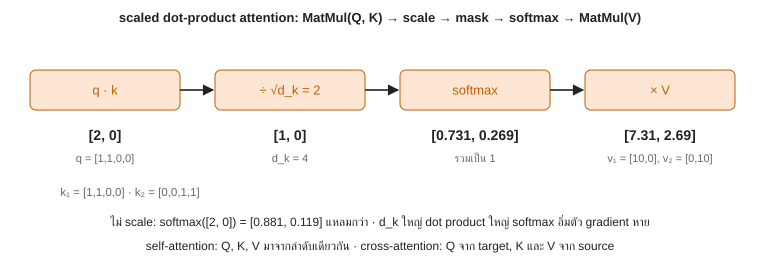
q ตรงกับ k₁ มากกว่า k₂ จึงได้คะแนน 2 กับ 0 หลัง scale และ softmax ได้น้ำหนัก 0.731 กับ 0.269 output จึงเอนไปทาง v₁
หาร √d_k ไม่ใช่ d_k · ไม่ scale แล้ว softmax แหลมเกินจน gradient หาย · cross-attention ใช้ target เป็น query ไม่ใช่ key
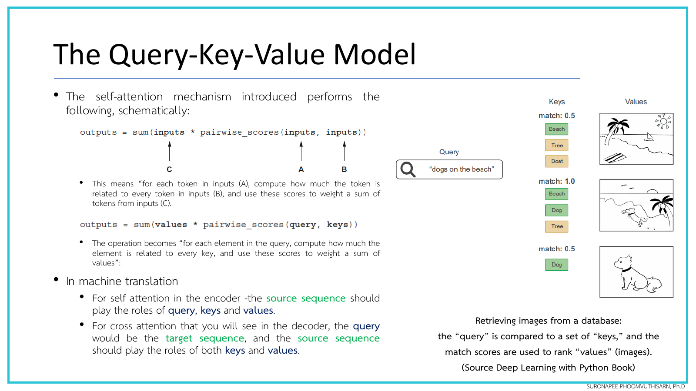
Multi-head attention: สร้าง Q, K, V หลายชุดอิสระ แต่ละชุดคือหนึ่ง head มี parameter ของตัวเอง จึงจับ แง่มุมความหมายที่ต่างกันของลำดับ เช่น head หนึ่งดูประธานกับกริยา อีก head ดูคำข้างเคียง แล้ว concatenate output ทุก head
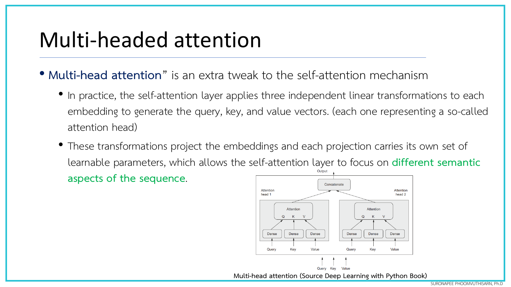
d_model 768, 12 head: ต่อ head 768/12 = 64 · Q, K, V: 3 × (768 × 768 + 768) = 1,771,776 · output projection 590,592 · รวม 2,362,368 เท่า single head 768 แต่ได้ 12 มุมมอง · Keras MultiHeadAttention(num_heads=4, key_dim=256): key_dim คือขนาดต่อ head รวม 4 × 256 = 1,024
เมื่อประกอบเป็น encoder block หนึ่งชั้นจะได้ MultiHeadAttention → residual + LayerNormalization → Dense → Dense → residual + LayerNormalization residual connection กันข้อมูลเดิมหายระหว่างทางแบบ ResNet และ LayerNormalization ช่วยให้ gradient ไหลดีขึ้นตอน backprop notebook ใช้ embed_dim 256 dense_dim 2048 num_heads 8 feed-forward ขยายเป็น 2,048 แล้วกลับ 256 มี (256 × 2,048 + 2,048) + (2,048 × 256 + 256) = 1,050,880 parameter
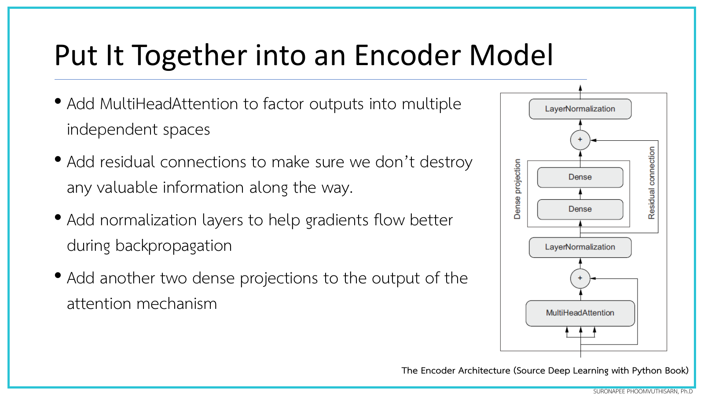
decoder อ่าน token 0…N ของปลายทางแล้วทาย N+1 มี attention สองชั้นย่อย: cross attention layer หาว่า token ไหนของต้นทางเกี่ยวกับ token ที่กำลังทายที่สุด · masked หรือ causal self-attention layer ทำให้ token ที่สร้างอิงแค่อดีตและตัวปัจจุบัน ถ้าไม่มี decoder โกงได้ด้วยการ copy target ตอนเทรน
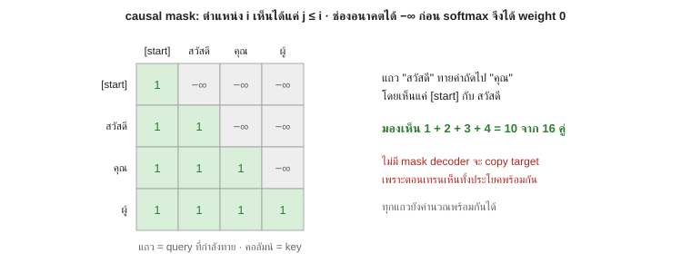
ช่องเขียวคือตำแหน่งที่มองเห็น ช่องเทาได้ −∞ ก่อน softmax e^(−∞) = 0 weight จึงเป็น 0 ทุกแถวคำนวณพร้อมกันตอนเทรน แต่ไม่มีแถวไหนเห็นอนาคต
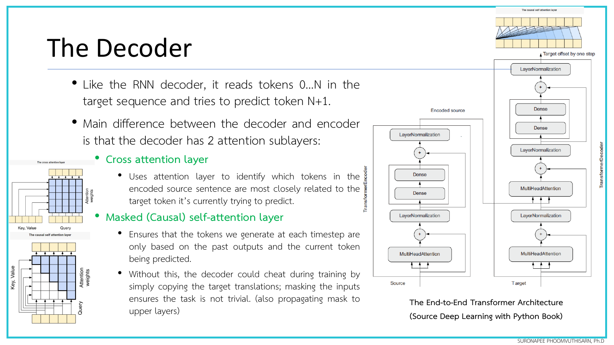
ในรูป end-to-end architecture มีป้าย "Target offset by one step" คือการเหลื่อมแบบตอน 2.1 decoder มี MultiHeadAttention สองตัว ตัวล่าง causal บน target ตัวกลางรับ encoded source เป็น key และ value ในโค้ดเขียนว่า x = TransformerDecoder(embed_dim, dense_dim, num_heads)(x, encoder_outputs)
| ชนิด | ทำอะไร | ตัวอย่าง | งาน |
|---|---|---|---|
| Encoder-only | แปลงข้อความเป็น representation ตัวเลข | BERT, RoBERTa, DistilBERT | classification |
| Decoder-only | ทายคำถัดไปซ้ำๆ จนจบ | GPT | text generation |
| Encoder-decoder | map ลำดับหนึ่งไปอีกลำดับ | Transformer ดั้งเดิม, BART, T5 | translation, summarization |
decoder-only ไม่มี encoder จึงไม่มี cross attention เหลือแค่ causal self-attention · BERT เป็น encoder-only ไม่ใช่ decoder
1 + 2 + 3 + 4 + 5 + 6 = 21 จาก 36
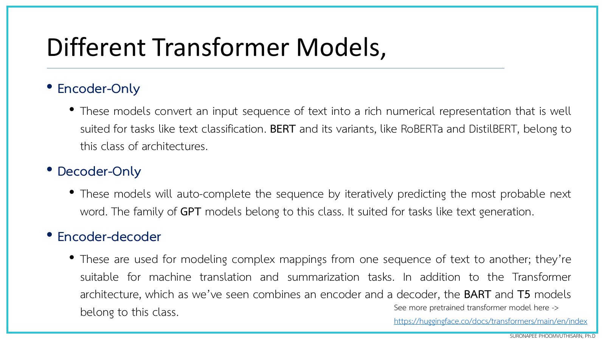
ลองฝึกต่อในแบบฝึก Lesson 11 หรืออ่านต่อ Lesson 12 — Transformers for NLP และ Transfer Learning
| หน้า | เนื้อหา | อยู่ในตอน |
|---|---|---|
| 1 | ปก Part 4 | etc — ปก |
| 2–9 | Agenda, text generation, sampling, temperature, IMDB generation | ตอน 1 |
| 10–16 | Machine translation, training และ inference, NMT example, seq2seq GRU | ตอน 2 |
| 17–22 | Sampled softmax, BLEU, problems of encoder–decoder, beam search | ตอน 3 |
| 23–30 | Attention, alignment, attention heatmap, Transformer overview | ตอน 4 |
| 31–40 | Positional embeddings, encoder, self-attention | ตอน 5 |
| 41–46 | QKV, scaled dot-product, multi-head, encoder block, decoder, Transformer types | ตอน 6 |
ตัวเลข temperature, BLEU, attention, positional encoding และ parameter คำนวณซ้ำด้วย Python แล้ว สไลด์พิมพ์ผิดหน้า 33 คือ sin มิติ 2